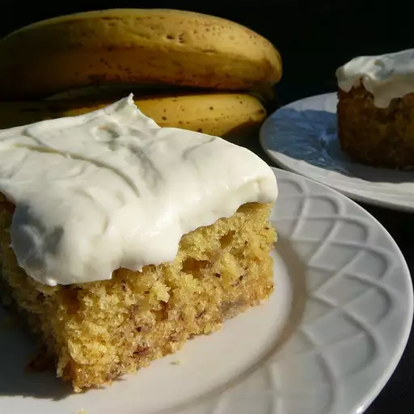

Banana cake

This banana cake recipe uses fresh mashed bananas and buttermilk for super moist
results. It was made for me by a friend while I was visiting her after she had
delivered her 11th child. I told her, "I should have baked for you!"
Ingredients
- 1 ½ cups mashed bananas
- 2 teaspoons lemon juice
- 3 cups all-purpose flour
- 1 ½ teaspoons baking soda
- ¼ teaspoon salt
- 2 ⅛ cups white sugar
- ¾ cup butter
- 3 eggs/li>
Steps
- Preheat the oven to 275 degrees F (135 degrees C). Grease and flour a 9x13-inch pan.
- Make cake: Mix mashed bananas with lemon juice in a small bowl. Mix flour,
baking soda, and salt in a medium bowl.
- Cream sugar and butter in a large bowl until light and fluffy, 3 to 4 minutes.
Beat in eggs one at a time, then stir in vanilla. Beat in flour mixture alternately
with buttermilk. Stir in banana mixture. Pour batter into the prepared pan.
-
Bake in the preheated oven until a toothpick inserted into the center of the cake
comes out clean, about 1 hour. Remove cake from the oven and place it directly into
the freezer for 45 minutes. This will make the cake very moist.
- Meanwhile, make frosting: Cream butter and cream cheese until smooth. Beat in vanilla.
Add confectioners sugar and beat on low speed until combined, then on high until
frosting is smooth.
- Spread frosting on cooled cake.